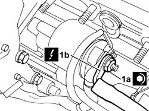
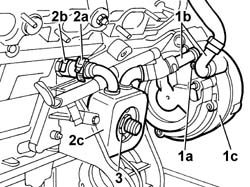
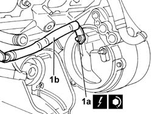

5530B36 LEAD between starter motor and alternator - R.R.
- Path
- Procedures > 55 ELECTRICAL EQUIPMENT > 5530 CURRENT GENERATION > 5530B BATTERY AND LEADS > 5530B36 LEAD between starter motor and alternator - R.R.
- Kind
- repair procedure (removal / refitting; the operation number is the code)
- Applies to
- engines: 3.0 V6, 3.2 V6; all production periods
- Interactive page
- https://sloeber94.github.io/elrnDB-lThss/en/#/193033
Applies to: engines: 3.0 V6, 3.2 V6; all production periods
 Removing
Removing
 Refitting
Refitting- Position the vehicle on a lift.
- Open the boot and disconnect the negative battery terminal.
See in Op. 7040D50 ENGINE COMPARTMENT UPPER SOUND INSULATION SHIELD - R.R.
See in Op. 4450B04 Right FRONT WHEEL (one) - R.R.
See in Op. 7055B64 Engine compartment DUST SEAL in front wheel arch (one), left or right - R.R.
See in Op. 7055B54 PROTECTION/GUARD under engine - R.R.
See in Op. 1048A21 AIR INLET HOSE FROM INTAKE TO FILTER - R.R.
See in Op. 1048A28 vacuum air circuit resonator pipe - r+r
See in Op. 1008C10 Power unit REACTION ROD - Replace
See in Op. 1048A11 COMPLETE AIR FILTER -R.R.
See in Op. 1072B50 Air CHAMBER - R.R.
See in Op. 2710A31 INTERMEDIATE DRIVE SHAFT - R.R.
See in Op. 1084B30 CARTRIDGE ENGINE OIL FILTER -R.R.
See in Op. 1076B84 EXHAUST PIPE BETWEEN RIGHT PRECONVERTER AND CATALYTIC CONVERTER - R.R.
See in Op. 1080B39 RIGHT CATALYTIC PRECONVERTER - R.R. or Replace Gasket
1. Undo the nut (1a) fastening the end (1b) of the starter motor supply lead.
 | Description | Connector |
|---|---|---|
1b | Starter motor | A020A |
| Description | Connector |
|---|---|---|
1b | Starter motor | A020B |

Applies to: engines: 3.0 V6, 3.2 V6; all production periods
- After having loosened the alternator fastenings, proceed as described below
1. Undo the bolt (1a) fastening the coolant connectors (1b) to the alternator (1c).
2. Open the band (2a) securing the pipe (2b) between the crankcase and the engine oil heat exchanger (2c).
3. Undo the middle heat exchanger nut and remove the heat exchanger.

Applies to: engines: 3.0 V6, 3.2 V6; all production periods
1. Undo the nut (1a) fastening the end of the supply lead (1b) between the starter motor and the alternator and remove it.
| Description | Connector |
|---|---|---|
1b | Starter motor | A020A |
| Description | Connector |
|---|---|---|
1b | Starter motor | A020B |

Applies to: engines: 3.0 V6, 3.2 V6; all production periods
Refitting
Removing1. Tighten the nut (1a) fastening the end of the supply lead (1b) between the starter motor and the alternator to the recommended torque.
 | Value - daNm | Fastening | Component | Ø |
|---|---|---|---|---|
. | 0.9 | Nut | ALTERNATOR | M8 |
| Description | Connector |
|---|---|---|
1b | Starter motor | A020A |
Applies to: engines: 3.0 V6, 3.2 V6; all production periods
1. Position the heat exchanger (1a) and secure the connectors (1b) complete with seals to the alternator using the bolt (1c).
2. Close the retaining band (2a) for the pipe (2b) between the heat exchanger and the crankcase.
3. Tighten the middle heat exchanger connector to the recommended torque.
| Value - daNm | Fastening | Component | Ø |
|---|---|---|---|---|
. | 3 | Connector | ENGINE OIL HEAT EXCHANGER | M18 X 1,5 |
Applies to: engines: 3.0 V6, 3.2 V6; all production periods
- Secure the starter motor end of the lead between the starter motor and the alternator using the nut.
See in Op. 1080B39 RIGHT CATALYTIC PRECONVERTER - R.R. or Replace Gasket
See in Op. 1076B84 EXHAUST PIPE BETWEEN RIGHT PRECONVERTER AND CATALYTIC CONVERTER - R.R.
See in Op. 1084B30 CARTRIDGE ENGINE OIL FILTER -R.R.
See in Op. 2710A31 INTERMEDIATE DRIVE SHAFT - R.R.
See in Op. 1072B50 Air CHAMBER - R.R.
See in Op. 1048A11 COMPLETE AIR FILTER -R.R.
See in Op. 1008C10 Power unit REACTION ROD - Replace
See in Op. 1048A28 vacuum air circuit resonator pipe - r+r
See in Op. 1048A21 AIR INLET HOSE FROM INTAKE TO FILTER - R.R.
See in Op. 7055B54 PROTECTION/GUARD under engine - R.R.
See in Op. 7055B64 Engine compartment DUST SEAL in front wheel arch (one), left or right - R.R.
See in Op. 4450B04 Right FRONT WHEEL (one) - R.R.
See in Op. 0010T11 ENGINE OIL - Check level and top up if necessary
-
See in Op. 7040D50 ENGINE COMPARTMENT UPPER SOUND INSULATION SHIELD - R.R.
- Connect the negative battery lead, then close the boot.
- Remove the vehicle from the lift.
Topics linked from this page (14)
- 0010T11 ENGINE OIL - Check level and top up if necessary
- 1008C10 Power unit REACTION ROD - Replace
- 1048A11 COMPLETE AIR FILTER -R.R.
- 1048A21 AIR INLET HOSE FROM INTAKE TO FILTER - R.R.
- 1048A28 vacuum air circuit resonator pipe - r+r
- 1072B50 Air CHAMBER - R.R.
- 1076B84 EXHAUST PIPE BETWEEN RIGHT PRECONVERTER AND CATALYTIC CONVERTER - R.R.
- 1080B39 RIGHT CATALYTIC PRECONVERTER - R.R. or Replace Gasket
- 1084B30 CARTRIDGE ENGINE OIL FILTER -R.R.
- 2710A31 INTERMEDIATE DRIVE SHAFT - R.R.
- 4450B04 Right FRONT WHEEL (one) - R.R.
- 7040D50 ENGINE COMPARTMENT UPPER SOUND INSULATION SHIELD - R.R.
- 7055B54 PROTECTION/GUARD under engine - R.R.
- 7055B64 Engine compartment DUST SEAL in front wheel arch (one), left or right - R.R.